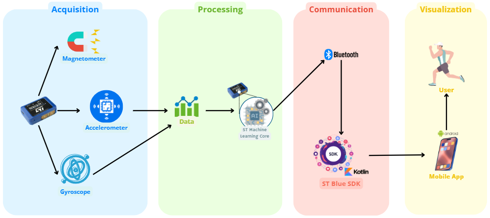

Presentazione del progetto
MotionAI è un progetto che si pone l'obiettivo di creare un sistema di riconoscimento di attività umane tramite l'utilizzo di una SensorTile.Box PRO, un dispositivo sviluppato da ST Microelectronics.
La SensorTile.Box PRO è un dispositivo indossabile che integra diversi sensori, tra cui accelerometro, giroscopio, magnetometro. Questi sensori permettono di raccogliere dati relativi all'attività umana e all'ambiente circostante.
Il progetto sfrutta le potenzialità di questo dispositivo per riconoscere attività umane come camminare, correre o guidare. Il sistema è stato sviluppato utilizzando un approccio di machine learning, in particolare rispettando i principi dell'Edge Computing, ovvero il processamento dei dati direttamente sul dispositivo. Questo permette di ridurre i tempi di risposta e di aumentare la privacy dell'utente.
Repository GitHub: MotionAI Android app
Funzionalità
- Raccolta dati sensori: Il sistema è in grado di raccogliere dati dai sensori presenti sulla SensorTile.Box PRO, tra cui accelerometro, giroscopio e magnetometro. Questi dati vengono utilizzati per riconoscere le attività umane.
- Visualizzazione dati: Il sistema permette di visualizzare i dati raccolti dai sensori in tempo reale, in modo da monitorare il corretto funzionamento del dispositivo.
- Riconoscimento attività: Il sistema è in grado di riconoscere diverse attività umane, come camminare, correre o guidare.
Architettura del sistema
L'architettura del sistema è raffigurata nel diagramma seguente:
Acquisition
Il modulo di acquisizione è responsabile della raccolta dei dati dai sensori presenti sulla SensorTile.Box PRO. Questi dati vengono inviati al modulo di processing per l'elaborazione.
Processing
Il modulo di processing è responsabile dell'elaborazione dei dati ricevuti dal modulo di acquisizione. In particolare, il modulo di processing utilizza un modello di machine learning per riconoscere le attività umane a partire dai dati raccolti.
Acquisizione dati e riconoscimento delle attività avvengono direttamente sulla SensorTile.Box PRO, rispettando i principi dell'Edge Computing. È possibile visionare il codice sorgente del firmware BLEMLC al seguente link:
Repository GitHub: BLEMLC
Communication
Il modulo di communication è responsabile della comunicazione tra il modulo di processing e l'interfaccia utente. In particolare, il modulo di communication invia i risultati del riconoscimento delle attività al modulo di visualizzazione. La comunicazione avviene tramite protocollo BLE (Bluetooth Low Energy), in particolare utilizzando l'SDK fornito da ST Microelectronics, Blue ST SDK.
Repository GitHub: BlueSTSDK_Android
Visualization
Il modulo di visualization è responsabile della visualizzazione dei dati raccolti dai sensori e dei risultati del riconoscimento delle attività. Il modulo di visualization permette all'utente di monitorare il corretto funzionamento del sistema. In particolare, il modulo di visualization è stato sviluppato come un'applicazione Android, utilizzando il linguaggio Kotlin.
Repository GitHub: MotionAI Android app
Casi d'uso
Il diagramma dei casi d'uso è raffigurato nella figura seguente:

Collegamento Bluetooth
L'utente deve essere in grado di collegare la SensorTile.Box PRO al proprio smartphone tramite connessione Bluetooth.
Visualizzazione dati
L'utente deve essere in grado di visualizzare i dati raccolti da accelerometro, giroscopio e magnetometro presenti sulla SensorTile.Box PRO.
Visualizzazione attività
L'utente deve essere in grado di visualizzare le attività riconosciute dal sistema: camminare, correre o guidare.